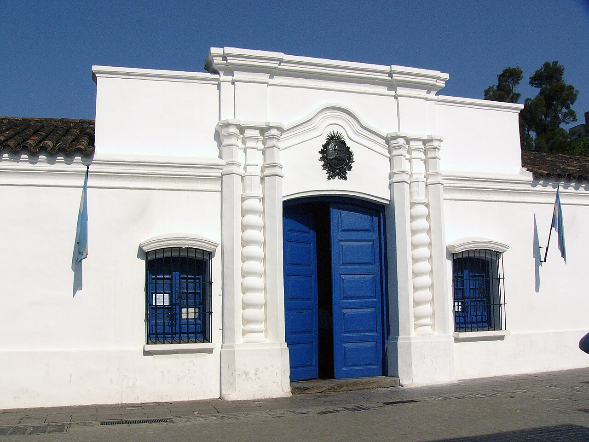
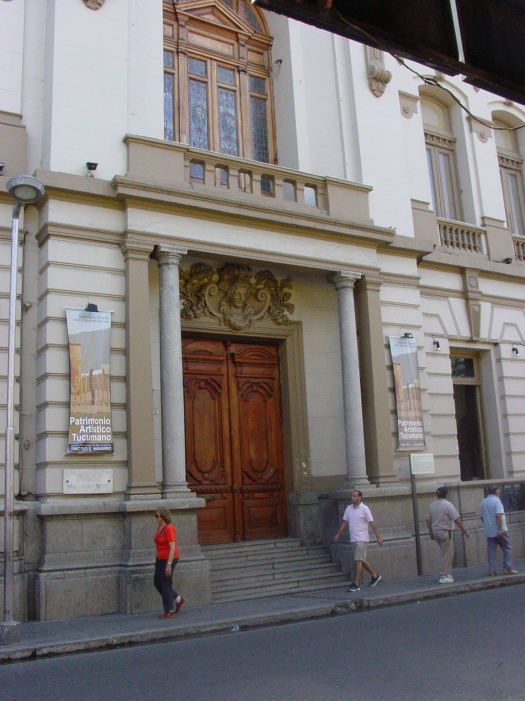
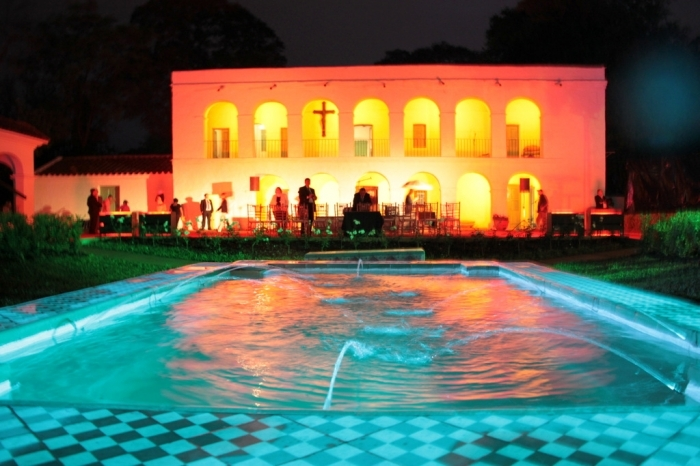
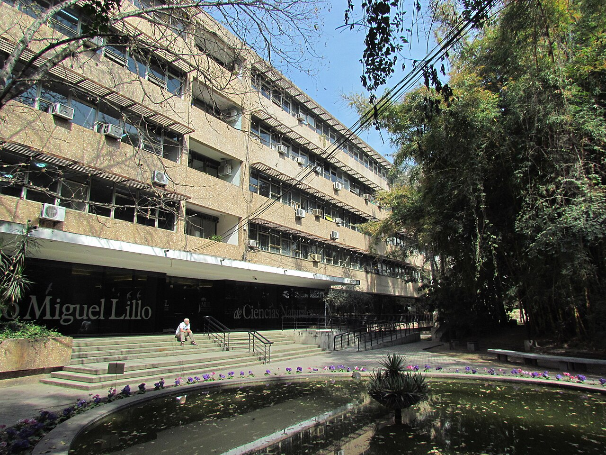

Casa Historica de la Independencia
Recorrido por el escenario central de la independencia argentina, con lectura historica del edificio, su museografia y su valor simbolico en la memoria nacional.
Visitas disenadas y guiadas por un Museologo graduado, con una mirada tecnica y cultural profunda para comprender el patrimonio historico, artistico y arqueologico de la provincia.
Cada recorrido esta planificado para ir mas alla de la visita turistica tradicional: analizamos contexto historico, guion curatorial, valor patrimonial y conexiones con la identidad local. Es una experiencia ideal para viajeros, instituciones educativas, equipos culturales y grupos privados que buscan contenido de calidad.

Recorrido por el escenario central de la independencia argentina, con lectura historica del edificio, su museografia y su valor simbolico en la memoria nacional.

Interpretacion de colecciones y artistas clave del NOA y de Argentina, con enfoque en historia del arte, patrimonio visual y procesos de conservacion.

Lectura cultural de tradiciones, objetos y relatos del norte argentino para comprender el folclore como patrimonio vivo y en transformacion.

Aproximacion a piezas y contextos arqueologicos del Noroeste Argentino, explicando cronologias, culturas y criterios de investigacion museologica.